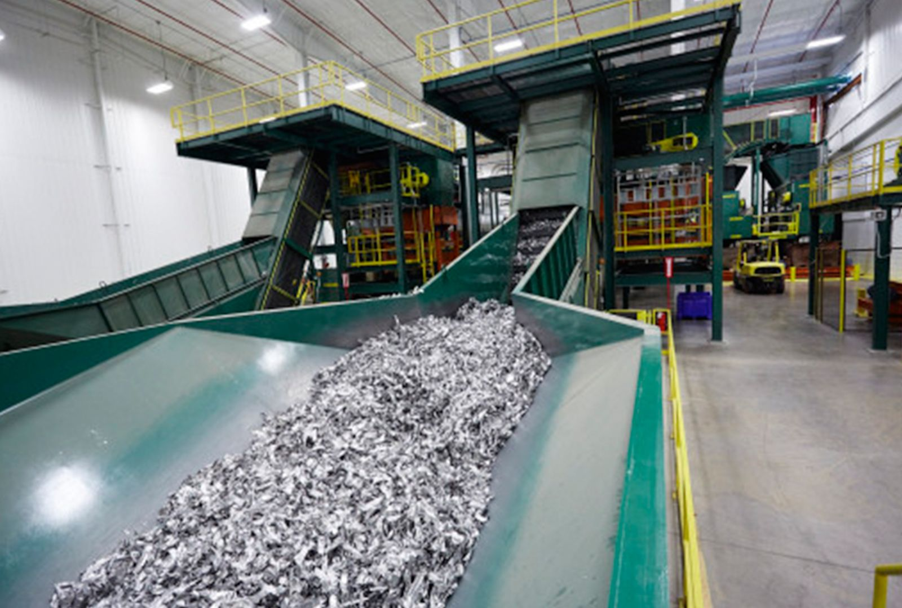

Sourcing
Identification and procurement of suitable materials according to the requirements of the buyer.
International Raw Material Sourcing & Trading
S&F Materials connects reliable suppliers with industrial buyers across Europe.

assets/img/hero.jpgCopper wire and scrap in an industrial setting, portrait format 4:5
Sourcing · Matching · Trade Support
Company
S&F Materials supports companies in sourcing and trading raw materials and secondary raw materials. Our aim is to bring suitable business partners together and to accompany procurement processes efficiently and professionally.
We start from the buyer’s requirement, not from a stock list.
We work with producers, processors, recyclers and industrial buyers.
Suppliers and buyers across Europe, with international enquiries reviewed case by case.
Services
Identification and procurement of suitable materials according to the requirements of the buyer.
Bringing together suitable suppliers and industrial buyers on the basis of material, quality, quantity and delivery region.
Support with communication, coordination and the preparation of trade transactions.
Materials
Qualities, packaging and delivery terms are agreed for each transaction. Further materials on request.
Copper and copper-bearing secondary raw materials. Quality, packaging and delivery terms are defined for each individual transaction.
Aluminium from production and post-consumer sources. Grades and tolerances are agreed with the buyer before any material is offered.
Our focus is currently on copper and aluminium. Further metallic secondary raw materials are added as demand develops. If you are looking for a material that is not listed here, send us the specification and we will review whether it fits our sourcing network.
Requirements outside our current focus are answered honestly: if we cannot serve a specification, we say so rather than pass it on.
We do not publish stock levels, quantities or prices. Availability changes constantly, and figures on a website would be outdated by the time you read them. Every enquiry is reviewed individually and answered on the basis of what is actually available.
Process
Four steps. The commercial agreement itself stays with the parties involved.
We understand the requirements of the buyer.
We identify suitable sources of supply.
We bring suitable business partners together.
The parties agree the commercial details directly with each other.
Quality
Raw material trading works on trust. What holds a transaction together is a clear specification and a partner who answers.
Tell us what you are looking for. We will review your requirements and identify potential supply opportunities.